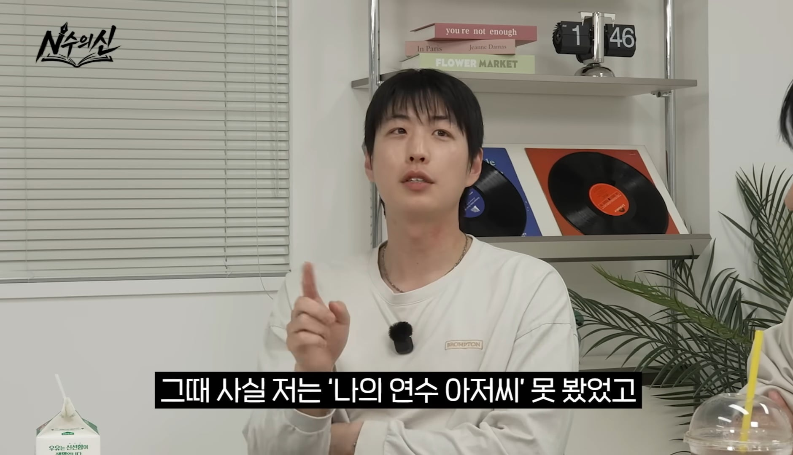
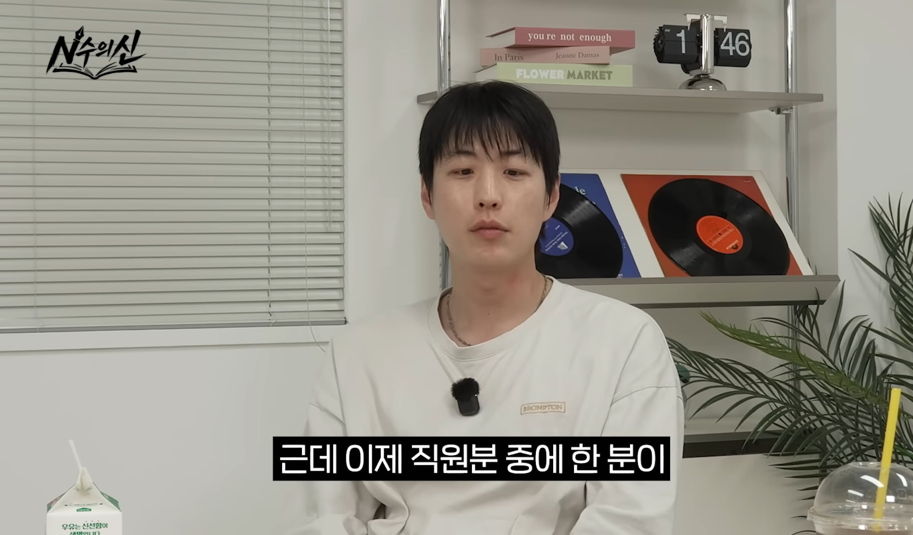
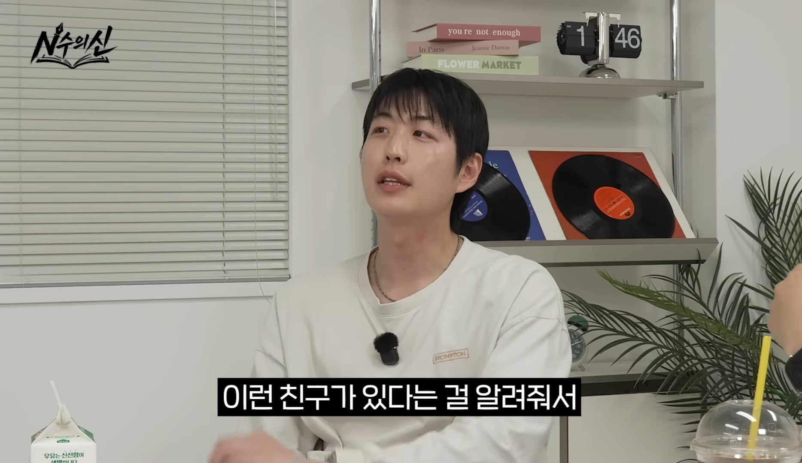
대부분 사람들이 피디가 원인를 발견해서 안원잘부 채널을 만든줄 알고있지만 처음엔 피디도 원이를 몰랐는데 회사 직원이 추천 해줘서 알았다고... 물론 원이의 가능성을 보고 캐스팅한건 피디 이지만 피디한테 원이를 추천한 그 직원의 공도 큰것 같음 근데 사람들은 잘 모르더라고...
TMI) 처음엔 미나미도 몰라서 일본어 할줄 아냐고 물어봤다고.
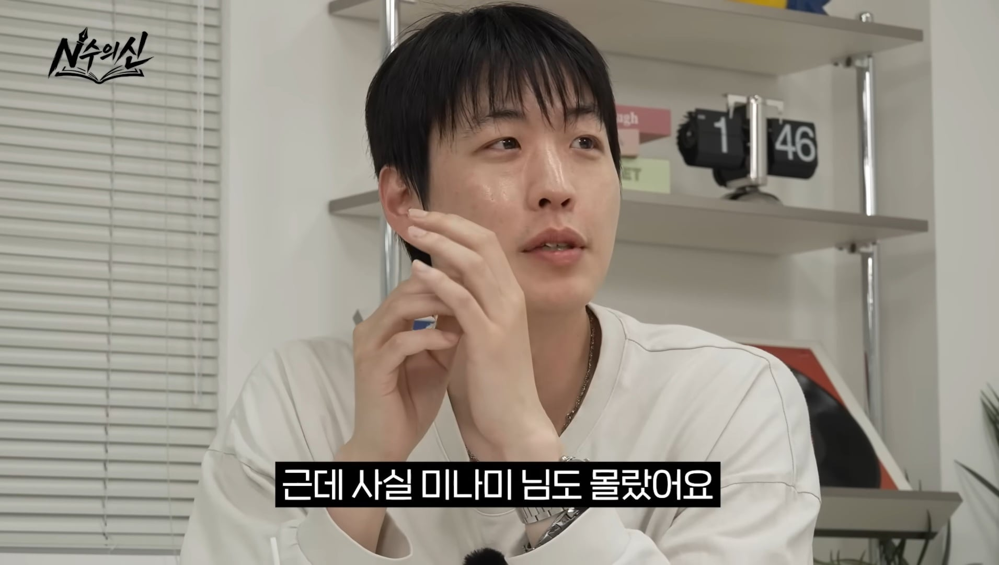
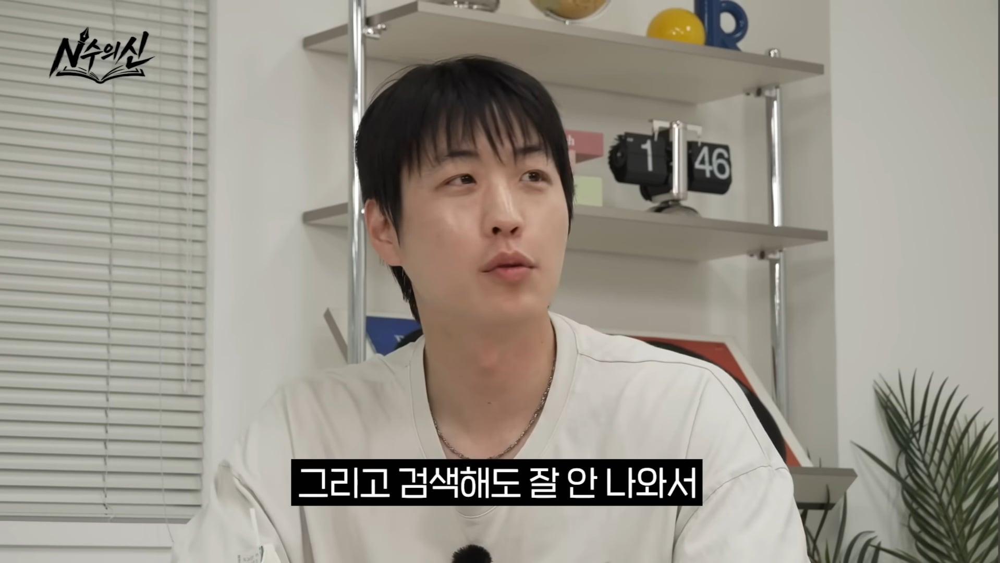
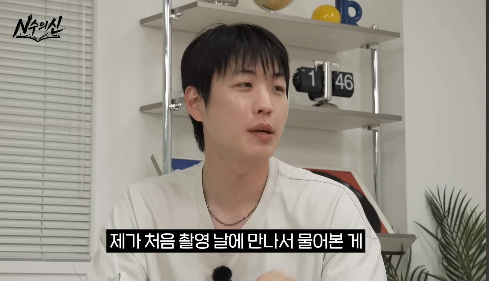
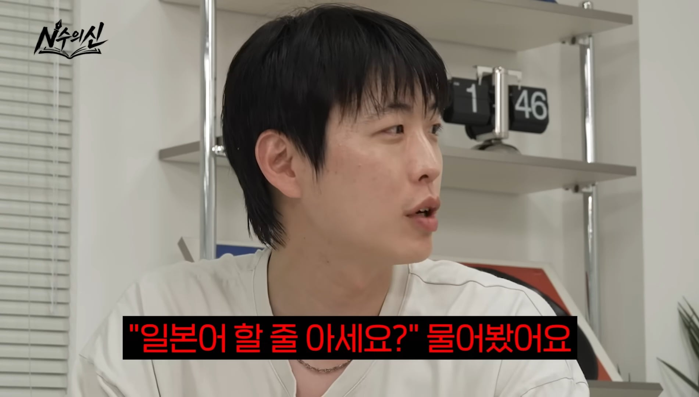
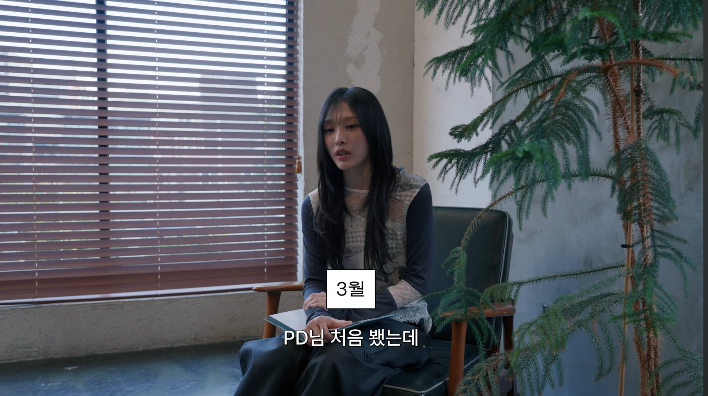
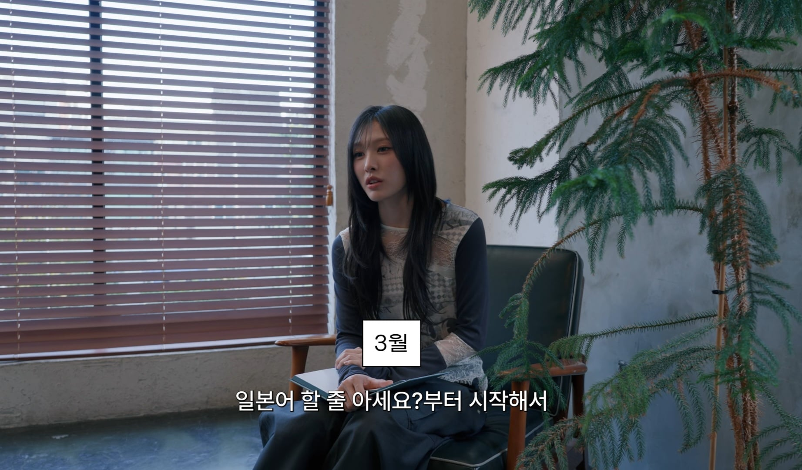
근데 10분찍고 깨달았다고 함 "이 사람은 대단한 사람이다"라고
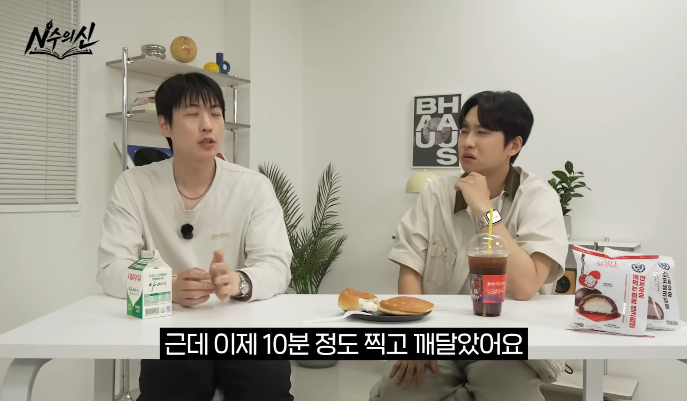
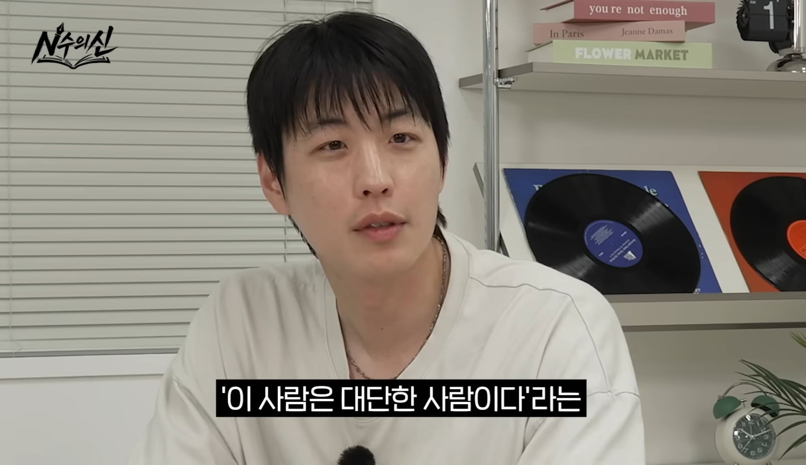
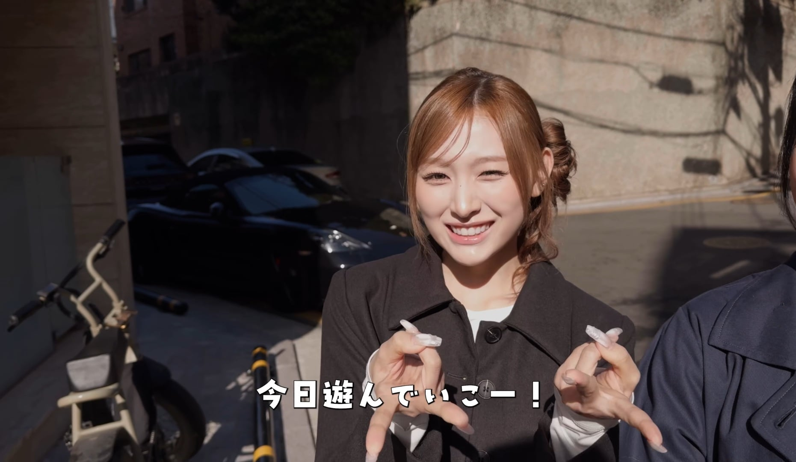
이 편으로 미나미 끼를 봤고
결국 그 갸루 캐릭터를 살려서 한 사람, 한 그룹,한 회사의 운명이 바뀌는 장면이 탄생 하게됨
만약 그때 그 직원이 원이를 추천하지 않았으면 우리가 아는 지금의 상황이 많이 달라지지 않았을까???
TMI 2)로 미나미 본인도 거제야호가 바이럴 되고 호평이라고 주변에서 말할때 이해가 안됐었다고 함
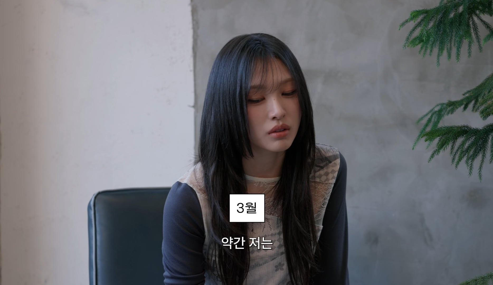
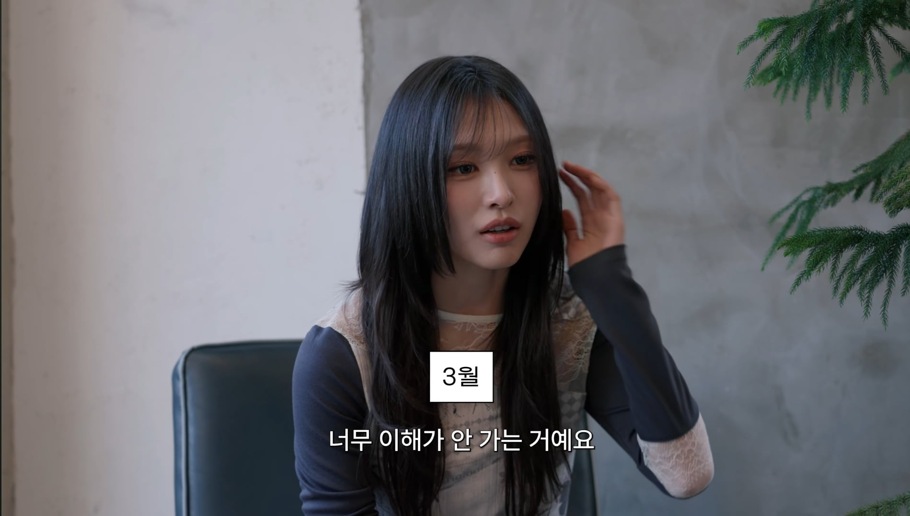
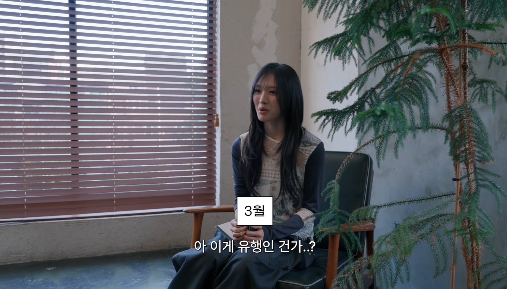
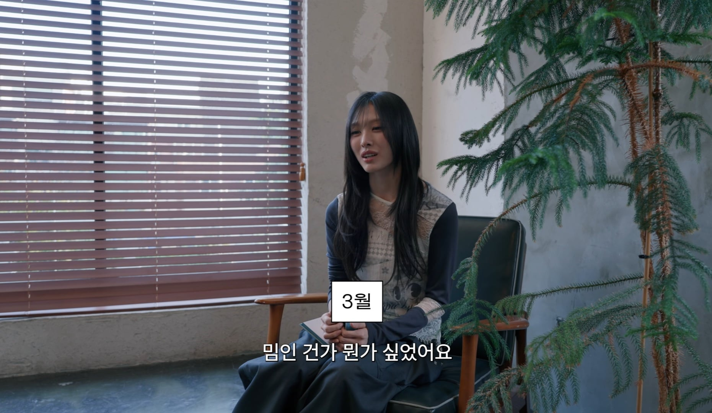
안원잘부 피디가 지금의 인기가 덧없다고 한 것도 이해가 가네
당사자들도 이게? 라고 생각한게 어느새 빵 터져서 전국민적 열풍의 시작이 될지 누가 알았겠어